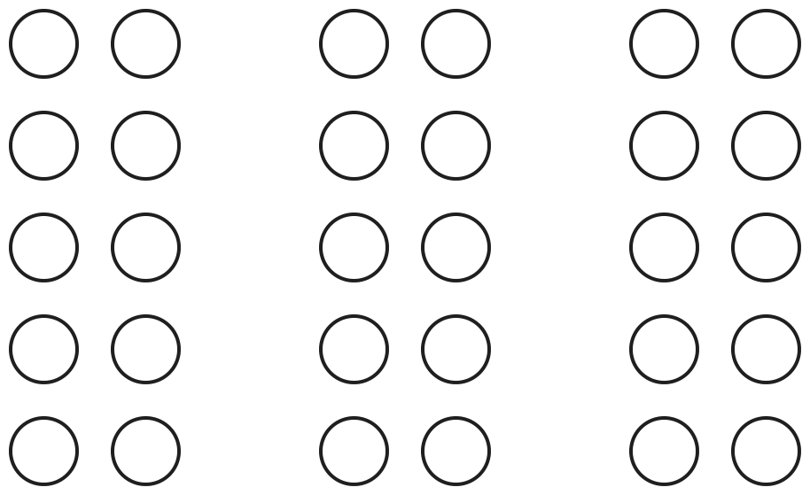
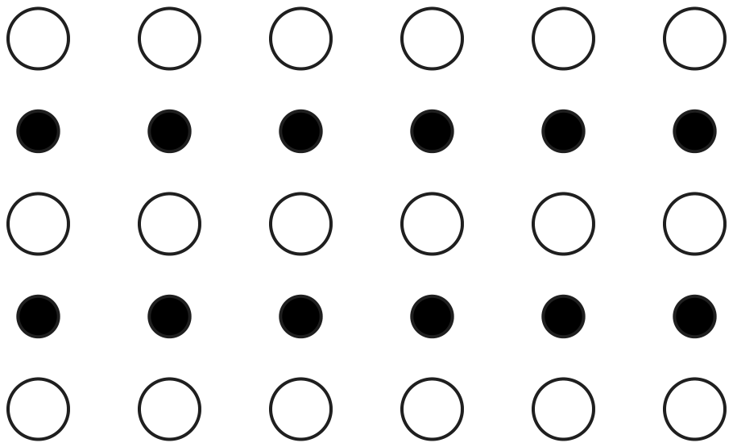
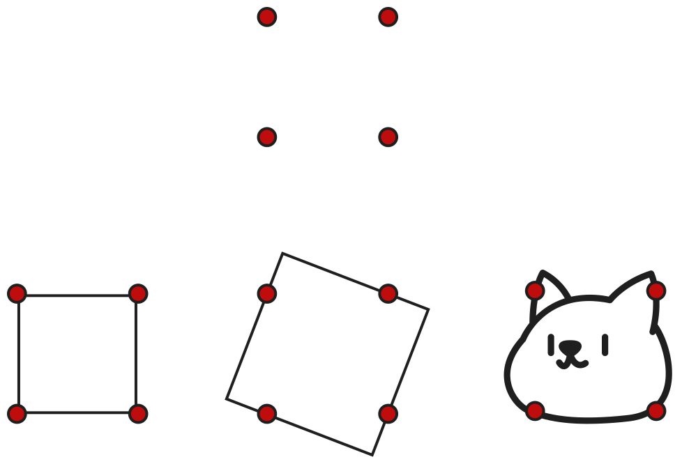

Gestalt
Psicologia da forma
Introdução
- Gestalt - palavra alemã de tradução literal forma ou configuração.
- Expressa ideia de uma totalidade que vai além de suas partes componentes.
- Contraponto à psicologia wundtiana, que se concentrava em elementos sensoriais.
Precursores e influências
- Ernst Mach (1838-1916) estudou sensações de espaço-forma e tempo-forma.
- Christian von Ehrenfels (1859-1932) desenvolveu as ideias de Mach, formalizando a ideia de qualidade da forma (Gestalt Qualitäten).
Precursores e influências
- Doutrina filosófica da fenomenologia, que busca uma descrição imparcial da experiência imediata.
- Mudança nos paradigmas da física, que passou a favorecer campos de força frente a ideias de atomismo e elementarismo.
Proponentes
- Max Wertheimer (1880-1943), Wolfgang Köhler (1887-1967) e Kurt Koffka (1886-1941).
- Estudos sobre percepção e sensação do movimento.
- Poderia a adição de dois estímulos fixos produzir a impressão de movimento?
- Expõe limitações da teoria wundtiana.
Constância perceptual
A integridade da experiência perceptual é mantidada mesmo com mudanças nos elementos sensoriais que a compõem.
Princípios da organização perceptual
- Percepção como ponto de partida e tema central da Gestalt.
- Existência de regras fundamentais por meio das quais organizamos nossa percepção.
- De aplicação espontânea, automática e inevitável.
Proximidade
Partes próximas no espaço e tempo tendem a ser percebidas juntas.

Semelhança
Partes similares tendem a ser percebidas juntas.

Fechamento
Há uma tendência a completar os elementos faltantes da figura.
Figura/fundo
Há uma tendência a perceber a figura e o fundo separadamente.
Boa-forma
Qualquer padrão de estímulo tende a ser visto de tal modo que a estrutura resultante é tão simples quanto as condições dadas permitem.

Aprendizagem e insight
- Estudos de Köhler sobre resolução de problemas por chimpanzés.
- Resolução de problemas relacionada à reestruturação do campo perceptual.
- Insight é compreensão ou percepção espontânea e imediata das relações entre elementos.
Teoria de campo de Kurt Lewin
- Kurt Lewin (1890-1947) trabalhou com Wertheimer, Koffka e Köhler.
- Ultrapassou os limites da Gestalt ortodoxa, estudando principalmente as motivações para o comportamento humano.
- Seu modelo teórico incorpora elementos da física contemporânea.
Teoria de campo de Kurt Lewin
- Espaço vital: a totalidade dos fatos que determinam o comportamento do indivíduo num certo momento.
- Campo psicológico é o espaço de vida considerado dinamicamente; não só físico, mas fenomênico.
Psicologia social de Kurt Lewin
- Contribuições para o estudo da dinâmica de grupos.
- Interdependência entre membros de um grupo. O grupo não é a soma dos membros; mudança de um membro altera a dinâmica.
- Transpõs o conceito de campo para a psicologia social; campo social.
- Estudos sobre diferentes estilos de liderança.
Psicologia humanista
A terceira força
A terceira força
- No início da década de 1960, a chamada terceira força desenvolveu-se na psicologia norte-americana.
- Buscava suplantar as duas maiores correntes existentes: o behaviorismo e a psicanálise.
- Enfatizava a crença na integridade da natureza humana e a plena utilização do potencial humano.
Influências anteriores
- Gestalt e outras: críticas ao mecanicismo e reducionismo; consciência como qualidade molar.
- Psicanálise dissidente: questionava o domínio exercido pelo inconsciente.
- Zeitgeist dos anos 1960: movimento hippie, descontentamento com aspectos da cultura ocidental.
As críticas da psicologia humanista
- Contra o behaviorismo: foco no comportamento manifesto seria improdutivo e desumanizador.
- Contra a psicanálise: oposição ao determinismo e à minimização do papel da consciência; crítica ao estudo apenas de neuróticos e psicóticos.
- Necessidade de estudar prazer, alegria, bondade, generosidade.
Abraham Maslow (1908–1970)
- Considerado o pai da psicologia humanista; conferiu respeitabilidade acadêmica ao movimento.
- Estudou pessoas notáveis buscando compreender o que as diferenciava.
- Principais conceitos: autorrealização e hierarquia de necessidades.
Autorrealização e hierarquia de necessidades
- Indivíduos tem propensão inata a autorrealização.
- Estado de desenvolvimento pleno e uso das habilidades e qualidades do indivíduo.
Carl Rogers (1902–1987)
- Impulso para a realização do self; similar ao conceito de autorrealização de Maslow.
- Atenção positiva condicional vs. incondicional.
- Pessoa em funcionamento pleno: mente aberta, viver o momento, liberdade, criatividade.
Terapia centrada na pessoa
- Enfatiza a experiência subjetiva do cliente no aqui e agora, mais do que interpretações do terapeuta.
- Foco na relação terapêutica como principal agente de mudança.
- Três condições básicas do terapeuta: empatia, congruência/autenticidade e consideração positiva incondicional.
Terapia centrada na pessoa
- Buscar favorecer um clima psicológico em que a pessoa possa integrar experiências, fortalecer o self e tornar-se mais autônoma.
- A terapia funciona como um processo facilitador da tendência à realização do self.